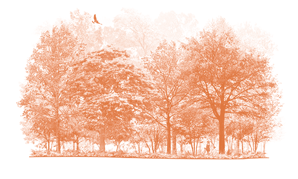

A rich, russet-and-gray bird with bold streaks down its white chest, the Song Sparrow is one of the most familiar North American sparrows. Don’t let the bewildering variety of regional differences this bird shows across North America deter you: it’s one of the first species you should suspect if you see a streaky sparrow in an open, shrubby, or wet area. If it perches on a low shrub, leans back, and sings a stuttering, clattering song, so much the better.
Song Sparrows eat many insects and other invertebrates in the summer, as well as seeds and fruits all year round. Prey include weevils, leaf beetles, ground beetles, caterpillars, dragonflies, grasshoppers, midges, craneflies, spiders, snails, and earthworms. Plant foods include buckwheat, ragweed, clover, sunflower, wheat, rice, blackberries, blueberries, strawberries, raspberries, mulberries, and wild cherries. Food types vary greatly depending on what’s common across the Song Sparrow’s extensive range. In British Columbia, Song Sparrows have even been observed picking at the droppings of Glaucous-winged Gulls.
Song Sparrow pairs search for nest sites together. Nest sites are usually hidden in grasses or weeds, sometimes placed on the ground and occasionally as high as 15 feet; often near water. Not afraid of human habitation, Song Sparrows may nest close to houses, in flower beds.
The female builds the nest, working mainly during the morning. It’s a simple, sturdy cup made of loose grasses, weeds, and bark on the outsides, then lined more tidily with grasses, rootlets, and animal hair. Construction takes about 4 days. The finished nest is 4-8 inches across (2-2.5 inches for the inside of the cup), and 2.5-4 inches deep.